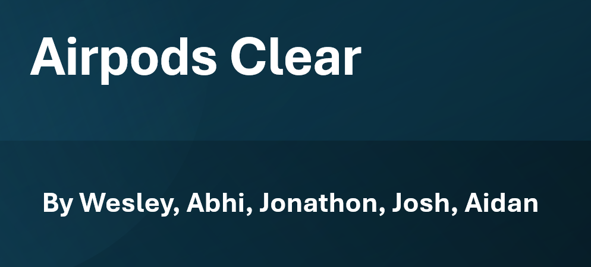

StatSports is a website I made for a 20time project in my Communications course. I developed a website using HTML, CSS, and JavaScript. I taught myself JavaScript to understand how to code in an API key for ESPN headlines. I took sheets of data from stats in the NFL and made tables with filtering options for them as well.
This project was created for DIGIT110. Basic HTML and CSS with implementation of Text Analysis, Game Analysis and a Timemap.

This was a group project where we took an existing product, added something to it, and re-marketed it towards a different target audience. We chose AirPods and changed the demographic to target 55-85 year olds. We named them AirPods Clear and added a feature that would allow the user to hear better with them in. We made a presentation to go along with the project and you can view it by clicking the button below.